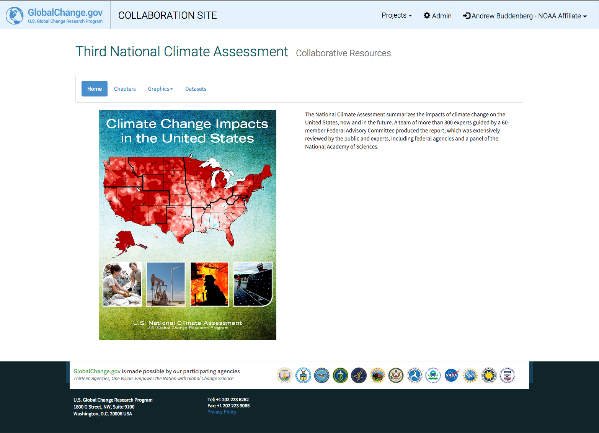
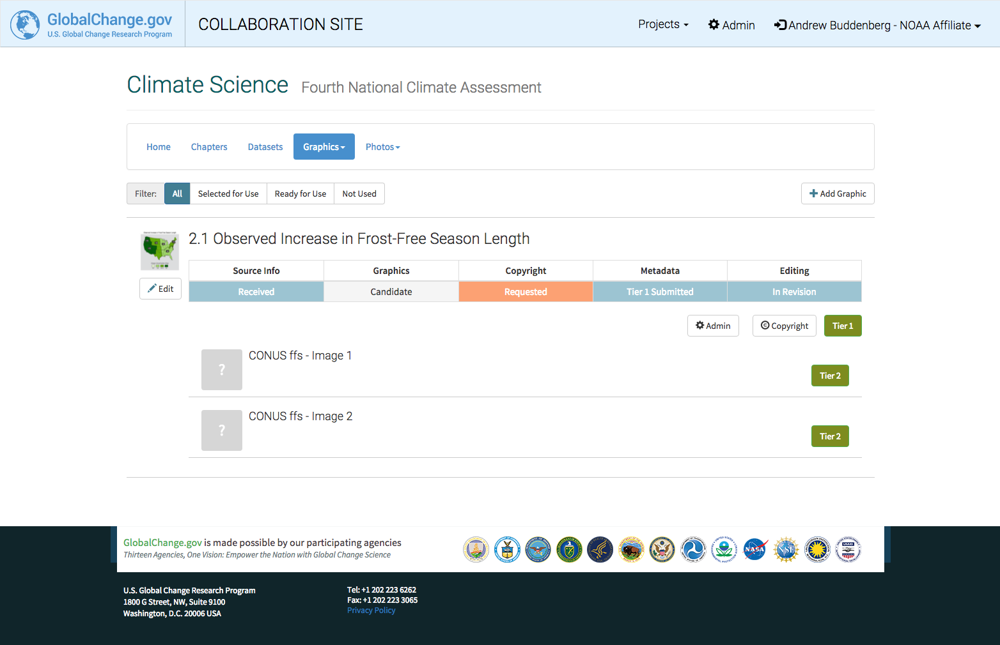
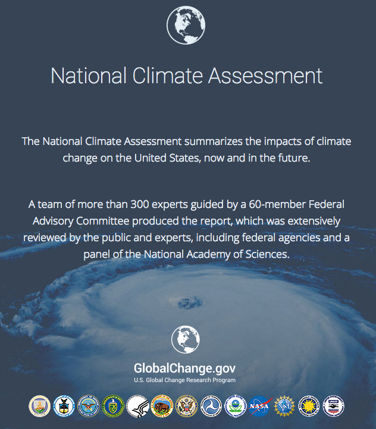

The GCIS Data Acquisition System
Another adventure in software engineering @ CICS-NC
A web application to facilitate the rapid entry and processing of traceable, sound global change data, information, and products.
A place to collaborate on metadata in real time.
The answer to a question:
The Assessment has a lot of moving parts.
vs.
Metadata shouldn't be this hard!
Many moving parts create friction.
Users shouldn't have to worry about breaking things.
It should be easy to add and change metadata - "Just type."